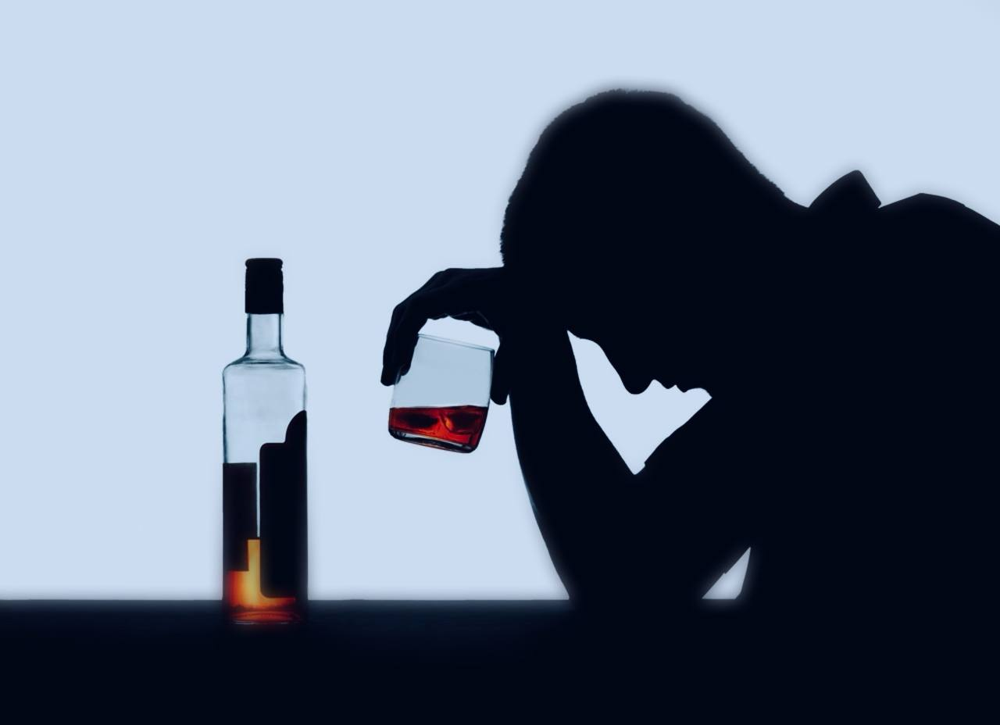

+380(97) 369 76
65
+380(97) 369 76
65Лечение алкоголизма Каменское
Мы знаем самые эффективные методы лечения алкогольной зависимости
Работаем в Одессе, Киеве, Львове, Харькове, Днепре, Запорожье, Черноморске


Бесплатная консультация, работаем круглосуточно 24/7
Мы знаем самые эффективные методы лечения алкогольной зависимости
Работаем в Одессе, Киеве, Львове, Харькове, Днепре, Запорожье, Черноморске
Алкоголизм – это серьезное хроническое заболевание, при котором у человека развивается как физическая, так и психологическая зависимость от спиртных напитков. Оно приводит к постепенному разрушению организма, ухудшению психоэмоционального состояния, снижению социальной и профессиональной активности. Без своевременного лечения человек попадает в замкнутый круг, где каждая новая доза алкоголя кажется единственным правильным решением проблем, создаваемых зависимостью. Лечение алкоголизма требует комплексного подхода, включающего медицинскую помощь, психотерапию и социальную реабилитацию. Как правило, истинный алкоголизм развивается постепенно и к 35-40 годам проявляются первые длительные запойные состояния которые имеют бесконтрольный характер и часто без квалифицированной медицинской помощи и качественного лечения алкоголизма — заканчиваются тяжелыми токсическими заболеваниями. Медицинская служба UmbrellaPlus занимается лечением алкоголизма более пяти лет, наши врачи знают как создать условия у зависимого человека для длительной и качественной ремиссии.
В городе Каменском доступны современные методы лечения алкоголизма и наркомании, которые включают детоксикацию организма с помощью капельниц от алкоголя, снятие абстинентного синдрома, медикаментозное подавление тяги к алкоголю, психологическую реабилитацию и социальную адаптацию. Лечение начинается с очищения организма от токсинов (вывод из запоя на дому или в стационаре), после чего специалисты работают над восстановлением физического и психологического состояния пациента. Важно понимать, что алкоголизм – это не просто вредная привычка, а серьезная болезнь, требующая профессиональной помощи. Обращение к квалифицированным наркологам в Каменском это – первый шаг к выздоровлению. Лечение алкоголизма — это длительный процесс который требует высокой квалификации и опыта специалиста, мы гарантируем эффективную борьбу с зависимостью, а так же мягкий выход из любого запойного состояния.
Распознать алкоголизм можно по следующим признакам:· Человек употребляет алкоголь регулярно, несмотря на отсутствие реальных поводов.· Тяга к спиртным напиткам становится неконтролируемой, а употребление спиртного имеет цикличный постоянный характер.· Увеличиваются дозы употребляемого алкоголя для достижения прежнего состояния опьянения.· Появляется абстинентный синдром (сильное похмелье), сопровождающийся физическими и психологическими симптомами: дрожь в руках, раздражительность, головная боль, отсутствие аппетита, апатия, депрессия.· Социальные, семейные и профессиональные проблемы становятся следствием употребления спиртных напитков.Если вы замечаете эти признаки у себя или близких, важно обратиться за профессиональной помощью к наркологу.
Алкоголизм развивается постепенно, проходя три основных стадии:
В Каменском предлагается широкий выбор методов лечения алкоголизма и так же купирования любых запойных состояний. Врач-нарколог команды Umbrella Plus “Безопасная наркология” помогает определить стадию заболевания и назначает комбинированную индивидуальную программу лечения алкогольной зависимости. Процесс обычно начинается с вывода из запоя и детоксикации организма от “шлаков и токсинов”. Затем проводятся психотерапевтические сессии, направленные на устранение психологической зависимости, и медикаментозное лечение для подавления физической тяги к любым спиртным напиткам. Специалисты также предлагают услуги кодирования от алкогольной зависимости в Каменском, которое весьма эффективно показало себя для долгосрочного результата в лечении алкогольной зависимости.
Стоимость лечении алкоголизма в городе Каменское начинается от 1499 грн.
| Услуга | Цена |
|---|---|
| Лечение алкоголизма Каменское | От 1499 грн |
| Вывод из запоя Каменское | От 1499 грн |
| Вывод из запоя на дому Каменское | от 1699 грн |
| Капельница от алкоголя Каменское | От 1499 грн |
| Капельница от алкоголя на дому Каменское | От 1699 грн |
| Лечение пивного алкоголизма Каменское | От 1499 грн |
| Лечение женского алкоголизма Каменское | От 1499 грн |
| Кодирование от алкоголизма Каменское | От 3999 грн |
| Кодирование от алкоголя уколом Каменское | От 3999 грн |
| Подшивка от алкоголя Каменское | От 9999 грн |
| Кодирование по методу Довженко Каменское | От 14999 грн |
Сотрудники медицинской службы UmbrellaPlus “Безопасная наркология” в городе Каменское предоставят квалифицированную помощь алкозависимым в лечении алкоголизма, вывода из запоя на дому или в стационаре. Лечение алкогольной зависимости обязательно включает в себя три этапа:
Лечение алкоголизма в Каменском начинается с обращения пациента к специалистам медицинской службы UmbrellaPlus “Безопасная наркология”. Первым этапом в лечении алкоголизма становится диагностика общего состояния пациента, а так же определяется длительность запоя. Затем проводится детоксикация организма с помощью капельниц от алкоголя — это помогает снять абстинентный синдром и вернуть человеку трезвость ума. Психотерапия и медикаментозные методы лечения алкогольной зависимости помогают справиться с закоренелыми убеждениями, снять патологическое влечение к алкоголю на психологическом уровне, а так же нормализовать тревожность и апатию. Полный курс реабилитации необходим при лечении алкогольной зависимости для закрепления результата и предотвращения рецидивов.
Лечение алкоголизма в городе Каменское проводится в специализированных наркологических клиниках, реабилитационных центрах, а также на дому под наблюдением врачей наркологов. Каменское предлагает широкий выбор учреждений с современными методиками лечения, включая медикаментозное кодирование, гипноз и психологическую помощь. Одним из центров лечения алкогольной зависимости в Каменском является медицинская служба UmbrellaPlus “Безопасная наркология”. Что бы проконсультироваться с наркологом по поводу лечения алкогольной зависимости, выведение из запойных состояний или кодирования от алкоголизма вам нужно позвонить по номеру 050-021-69-57 и получить бесплатную консультацию доктора по тревожащему вас вопросу.
Опытные врачи наркологи в наркологической клинике UmbrellaPlus “Безопасная наркология” в городе Каменское предоставляют квалифицированную медицинскую помощь при выводе из запоя, купировании похмельного синдрома, а так же кодирования от алкогольной зависимости с помощью инъекции дисульфирама. Пройти высокоэффективное лечение алкогольной зависимости можно на дому или в стационаре. Наши сотрудники с многолетним опытом лечения алкогольной зависимости помогут пациентам пройти все три шага лечения алкоголизма начиная от снятия алкогольной интоксикации до кодирования с последующей реабилитации и длительной психотерапией
Капельница от алкоголя помогает очистить организм от шлаков и токсинов, улучшить общее состояние после длительного злоупотребления алкоголя и снять симптомы острого или хронического похмелья. В состав различных капельниц от алкоголизма входят дезинтоксикационные растворы, гепатопротекторы для полного восстановления работы печени, аминокислоты и витамины, седативные препараты для нормализации сна, а так же щелочные растворы для восстановления водно-солевого баланса. Капельница от алкоголя — это универсальный и золотой метод в борьбе с алкогольной интоксикацией. Основным плюсом капельниц от алкоголизма является быстрота и высоко эффективность в лечении алкогольного отравления любой сложности. Наши наркологи знают состав самых сильных дезинтоксикационных капельниц для купирования даже самого тяжелого алкогольного отравления.
Наиболее эффективным методом в лечении алкогольной зависимости является комплексный подход который обязательно сочетает в себе: детоксикацию с помощью капельницы от алкоголя, кодирования от алкогольной зависимости, а так же психотерапию и реабилитацию. Помните что для предотвращения рецидивов употребления спиртных напитков мы рекомендуем кодирование от алкогольной зависимости, так как такой метод лечения алкоголизма позволяет создать длительное отвращение к спиртным напиткам на психологическом и физическом уровне, тем самым добиться стойкой ремиссии и длительной трезвости. Самый эффективный способ в лечении алкоголизма на сегодня считается хирургическое лечение с помощью подшивки от алкоголя. Такой метод позволяет ввести пациенту самую большую дозу дисульфирама который будет длительно находиться в организме зависимого человека и “сдерживать его” от дальнейшего употребления спиртного, сделав безопасное выпивание алкогольных напитков попросту невозможным.
Кодирование в Каменском осуществляется с помощью медикаментозных препаратов, гипноза или психологического внушения. Это помогает подавить тягу к алкоголю и обеспечить длительный результат. Кодирование от алкоголизма является эффективным метод в лечении алкогольной зависимости даже на самой запущенной стадии. Существует несколько основных методов кодирования от алкоголя:
Любой из способов в лечении зависимости эффективен, но стоит помнить что метод подбирается индивидуально исходя из физического здоровья пациента, а так же его психологического настроя.
Укол от алкоголизма – это форма медикаментозного кодирования от алкогольной зависимости которая считается золотым стандартом в первичном лечении алкогольной зависимости вне зависимости от длительности употребления и стадии заболевания. Препарат вводится двумя способами, первый это внутривенное кодирование, а второй метод это инъекция “кодирующего” препарата под лопатку. Такие методы позволяют добиться хороших результатов в лечении алкогольной зависимости, блокируя удовольствие от употребления алкоголя и подавляя тягу. Так же в случаи срыва пациента, препарат вызывает сильнейшую токсическую реакцию которая может закончиться тяжелым отравлением и даже летальным исходом. Врач нарколог перед кодировкой уколом проводит консультацию, а так же объясняет суть кодирования от алкогольной зависимости. Мы гарантируем длительную ремиссию, а так же стойкую трезвость даже в самых стрессовых ситуациях.
Пивной алкоголизм требует специального подхода и хорошего опыта врача нарколога, так как такая форма алкогольной зависимости воспринимается многими пациентами, а так же их родственниками как “легкая” форма алкоголизма. Лечение пивного алкоголизма начинается с полной дезинтоксикации с помощью капельницы от алкоголя, что бы вывести все накопленные токсины из организма пациента, а так же поддержать адекватную работу всех органов и систем которые подверглись сильнейшему токсическому отравлению вследствие хронического употребления пивных напитков. Второй этап в лечении пивного алкоголизма выступает кодирование одним из трех методов (кодирование от алкоголизма уколом, кодирование от алкоголизма подшивкой, кодирование от алкоголизма по методу Довженко). Третий этап заключительный который включает психологическую терапию и реабилитацию с последующей адаптацией к трезвой жизни зависимого человека.
Женский алкоголизм – это сложное хроническое заболевание, требующее деликатного и профессионального подхода врача нарколога. Физиологические особенности женского организма делают алкогольную зависимость более разрушительной: органы и системы страдают быстрее, чем у мужчин, а эмоциональное состояние женщины осложняет процесс восстановления.Особое внимание уделяется семейной поддержке и устранению социальных последствий зависимости. Лечение женского алкоголизма в Каменском проводится в комфортных условиях, обеспечивая конфиденциальность и внимание к каждой пациентке.Если вы или ваши близкие нуждаются в помощи, важно не откладывать обращение к специалистам. Начать лечение можно прямо сейчас, выбрав одну из наркологических клиник Каменского. Медицинская служба UmbrellaPlus “Безопасная наркология” занимается лечение женского алкоголизма в независимости от стадии заболевание и гарантирует быстрый и безопасный вывод из запоя, а так же качественную сформированную трезвость в будущем. Лечение женского алкоголизма длительный процесс, обращайтесь пока не стало слишком поздно.
На данный момент в Украине не существует принудительного лечения алкоголизма, любое медицинское вмешательство и любая медицинская манипуляция проводится только по устному и письменному согласию пациента. Только в случаях неотложной помощи когда есть угроза жизни больного, а так же во время реанимационных мероприятий врачи могут оказывать помощь без согласия больного.
Анонимно

"Ну в хлопців просто золоті руки й світла голова, мене капали Олексій та Владислав, буквально за декілька сеансів я наче заново народився, до цього пив більше 3х тижнів, не міг зупинитись, дуже радий що знайшов саме цих спеціалістів, всім рекомендую"
Анонимно
"В течение нескольких лет я злоупотреблял алкоголь, что привело к увольнению с работы и вызвало у меня мысли о суициде. Понимая, что такой образ жизни неприемлем, я обратился за помощью в клинику "Амбрела". Здесь я смог преодолеть свою зависимость от спиртного благодаря заботливым и опытным врачам, а также эффективной системе лечения. Спустя более года я полностью избавился от желания употреблять алкоголь, и теперь моя жизнь вернулась в норму. Я даже не приближаюсь к спиртному! Благодарю врачей клиники "Амбрела" за их помощь и заботу."
Анонимно
"Я обращался за помощью в различные клиники, пытаясь избавиться от своей зависимости от алкоголя, но без особых успехов. Никак не мог справиться с желанием прибегнуть к бутылке, пока друг не посоветовал мне обратиться в центр "Амбрелла". Я записался на прием и был поражен заботливым отношением к пациентам. Уже прошло два года, и теперь я смотрю на алкоголь с абсолютной равнодушием, активно занимаюсь спортом и улучшил отношения в семье. Благодаря центру "Амбрелла" моя жизнь была спасена от алкогольной зависимости!"
Анонимно

"Хочу выразить свою благодарность врачам из центра алкоголизма "Амбрела" за то, что они буквально спасли мою жизнь. В течение последнего года я сильно увлекался питьем, и все это привело к катастрофическим последствиям. Хотя я ходил на терапевтические сеансы, но безрезультатно. Тогда я нашел адрес клиники "Амбрела" в интернете, изучил отзывы и информацию о центре, и записался на прием. Там мне сразу предложили методику лечения, которая помогла не только справиться с физической ломкой, но и психической зависимостью от алкоголя. Не буду распространяться, скажу только одно - после пребывания в этой клинике я стал другим человеком, и навсегда забыл, что такое привкус алкоголя. Больше меня не тянет на это! Я искренне верю, что в центре "Амбрела" трудятся настоящие целители душ!"
Анонимно
"После сложного развода мой сын начал подавлять свою обиду и горе употреблением алкоголя. Он старался скрывать это от меня, но я, как мать, почувствовала, что что-то не так. В конечном итоге, ситуация стала критической. Моя знакомая посоветовала мне обратиться в клинику "Амбрела". Я была приятно удивлена их работой! Они помогли сыну преодолеть очередной период злоупотребления алкоголем, и с тех пор прошел уже более года, и он совсем не пьет."
Анонимно
"Благодаря вашей помощи, моя семья была спасена. Я с трудом уговорила мужа начать лечение, и последний каплей был пьяное ДТП. К счастью, в аварии никто не пострадал, но это был для него сигнал к действию. Он наконец согласился пройти курс лечения на дому, в стационар не хотел ложиться. Лечение было трудным, и были моменты, когда срыв был настолько близок, но благодаря вашему центру Амбрелла мы справились с этим."
Анонимно
"Для меня эта клиника стала настоящим спасением! Долгое время я упорно отказывался от лечения, уверен был, что со мной все в порядке. Но к счастью, семья уговорила меня попробовать. И сегодня я чувствую себя невероятно счастливым, осознавая, что мне абсолютно не нужен алкоголь. Огромное спасибо за помощь и поддержку, которые я получил здесь! Я благодарен вам за новую возможность жить полноценной и счастливой жизнью!"
Анонимно
"Выражаю благодарность ребятам, которые оказали мне помощь и не отвернулись. Уже 10 месяцев я остаюсь чистой. Благодарю за то, что помогли найти новый путь в моей жизни."
Приезд в течении 60 минут от момента поступления заявки
Наши филиалы есть во всех больших городах Украины.
Мы оказываем профессиональную доказательную медицинскую помощь. Гарантией является наше имя.
Номер телефона:
+380 (97) 369 76 65
+380 (50) 021 69 57
Адрес главного офиса: г. Харьков ул. Сумская 47
Офис вашего города нужно
уточнить
Работаем в: Одессе, Киеве, Львове, Харькове, Днепре,
Запорожье
Telegram: t.me/umbrellaplus
График работы: Круглосуточно